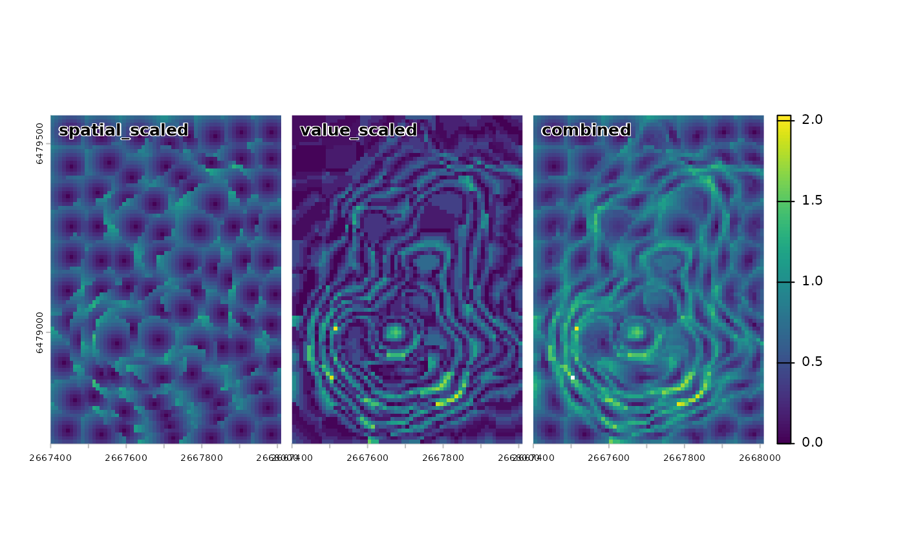

Computes per-pixel distance diagnostics from each pixel to its supercell center
Usage
sc_metrics_pixels(
x,
sc,
metrics = c("spatial", "value", "combined", "balance"),
scale = TRUE,
step,
compactness,
dist_fun = NULL
)Arguments
- x
The input SpatRaster used to create
sc.- sc
An sf object returned by
sc_slic().- metrics
Character vector of metrics to return. Options:
"spatial","value","combined","balance". Default:c("spatial", "value", "combined", "balance").- scale
Logical. If
TRUE, returnsspatialandvalueas scaled distances (spatial_scaled,value_scaled).- step
A step value used for the supercells If missing, uses
attr(sc, "step")when available- compactness
A compactness value used for the supercells If missing, uses
attr(sc, "compactness")when available. Compactness mode is read fromattr(sc, "compactness_method")when available.- dist_fun
A distance function name or function, as in
sc_slic(). If missing orNULL, usesattr(sc, "dist_fun")when available.
Value
A SpatRaster with one or more layers depending on metrics.
Interpretation:
- spatial
Lower values indicate more compact supercells.
- value
Lower values indicate more homogeneous supercells.
- combined
Overall distance; mainly useful for ranking.
- balance
0 indicates balance; negative values indicate spatial dominance; positive values indicate value dominance.
Metrics:
- spatial
Spatial distance from each pixel to its supercell center in grid-cell units (row/column index distance). If the input supercells were created with
step = use_meters(...), distances are reported in meters.- value
Value distance from each pixel to its supercell center in the raster value space.
- combined
Combined distance using
compactnessandstep.- balance
Signed log ratio of scaled value distance to scaled spatial distance; 0 indicates balance. Always computed from scaled components.
When scale = TRUE, spatial and value are returned as
spatial_scaled and value_scaled.
Details
If sc lacks supercells, x, or y columns, they are derived from geometry
and row order, which may differ from the original centers.
When using SLIC0 (set compactness = use_adaptive() in sc_slic()), combined and balance metrics use per-supercell
adaptive compactness (SLIC0), and scaled value distances are computed with the
per-supercell max value distance.
Examples
library(supercells)
vol = terra::rast(system.file("raster/volcano.tif", package = "supercells"))
vol_sc = sc_slic(vol, step = 8, compactness = 7)
metrics = sc_metrics_pixels(vol, vol_sc, scale = TRUE)
terra::panel(metrics, nr = 1)
